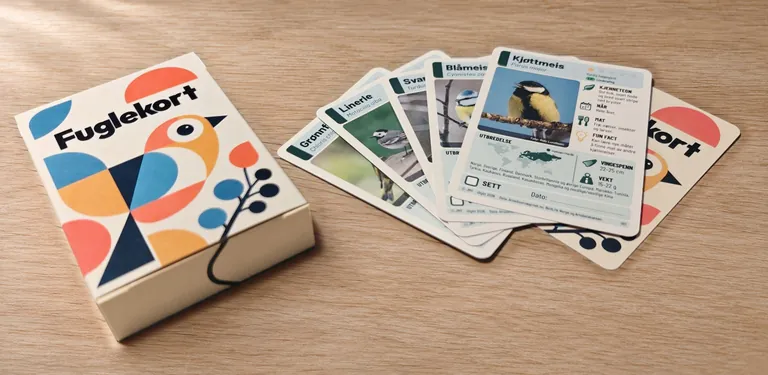
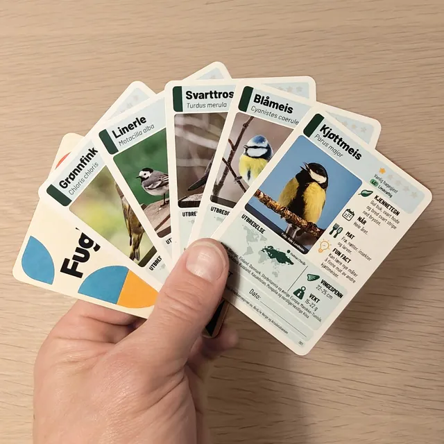

NATUREN PÅ HÅNDEN
Små fugler.
Store oppdagelser.
Fuglene fra hagen, samlet i en eske
En hel verden rett utenfor vinduet.
Bli kjent med fuglene rundt deg —
ett kort om gangen.
For nysgjerrige små.
Og like nysgjerrige store.
EN LITEN SMAKEBIT PÅ FLOKKEN
Hvem bor i hagen din?
5 kort fra kortstokken
Trykk på et kort og se nærmere.
Ekte bilder · 5 kort fra kortstokken
Vil du ha dem i hånden?
Mer om kortene.
Slik ser kortene ut


«De var fine»
Hva står på kortene
Hagefugler er en kortstokk med fuglene du kan se i og fra hagen, og noen du møter i skogen eller ved vannet. Hvert kort har bilde, kjennetegn og en fun fact, og plass til å krysse av når du har sett fuglen.
Kortstokken har 55 kort: 50 fugler, forklaringskort og bonuskort med andre dyr i hagen.
Velg mellom ekte fotografier og tegneseriefugler. Begge versjonene lar deg bli kjent med de samme fuglene.
Se etter kjennetegnIllustrasjoner eller fotografier og enkle beskrivelser hjelper deg å kjenne igjen fuglene.
Oppdag noe du ikke vissteLes om maten, vingespennet og de små tingene som gjør hver fugl spesiell.
Ta vare på øyeblikketKryss av for fuglene du har sett, og skriv ned datoen på kortet.
Slik leser du kortene
Stjerner, farger og kart hjelper deg å bli kjent med hver fugl.
STJERNENE
Hvor lett er fuglen
å se i hagen?
- Vanlig hagegjest
- Regelmessig hagegjest
- Uvanlig hagegjest
- Sjelden hagegjest
- Svært sjelden hagegjest
Stjernene gjelder hager i boligstrøk. Grunnlaget er Hagefugltellingen 2024–2026 fra fôringsplasser i hele landet og funn i Artsobservasjoner.
Stjernene beskriver hvor vanlig fuglen er å se i hagen. Rødlistemerket beskriver risikoen for at arten dør ut i Norge.
Rødlista Artens status i Norge
Merket under stjernene viser kategorien i Norsk rødliste for arter 2021 fra Artsdatabanken, som denne kortutgaven bruker.
Fargen ved navnet Hvilken fuglegruppe?
Fargestolpen til venstre for navnet viser hvilken orden fuglen tilhører hos Artsdatabanken.
- Spurvefugler
- Haukefugler
- Vade-, måke- og alkefugler
- Duefugler
- Falkefugler
- Tranefugler
- Gjøkfugler
- Horn- og hærfugler
- Spettefugler
- Ugler
- Hønsefugler
- Andefugler
- Nattravn- og seilerfugler
- Lomfugler
- Råkefugler
- Pelikan- og hegrefugler
Kartet Hvor i verden lever fuglen?
Kartet viser en grov utbredelse. Teksten under kartet nevner land og områder.
- Hekker eller er der hele året
- Hekker (bare sommer)
- Er der om vinteren
- Innført av mennesker
«Sett» Din egen oppdagelsesliste
Kryss av og skriv datoen når du har sett fuglen selv. Bruk kortene som en liten samling av egne naturopplevelser. Hvor mange finner du?
Kilder og fotografer
Kilder til opplysningene
Kortutgaven oppgir Hagefugltellingen (BirdLife Norge/Fuglevennen), Artsobservasjoner.no og Artsdatabanken som grunnlag. Fakta, vingespenn og vekt er kontrollert mot Store norske leksikon, BTO, RSPB og andre fagkilder, ifølge informasjonskortet.
Fotografene i fotoversjonen
Fotografiene er hentet fra artssidene hos Artsdatabanken og Artsobservasjoner. De er beskåret og skalert for kortene.
| Kort | Fotograf |
|---|---|
| 001 · Kjøttmeis | Rolv Lundheim |
| 002 · Blåmeis | Jan Inge Karlsen |
| 003 · Svarttrost | Kjell Larsen |
| 004 · Linerle | Kjell A. Kristiansen |
| 006 · Grønnfink | Kjartan Pedersen |
De fem fotografiene er oppført med CC BY 4.0 på bildekrediteringskortet.
Se full bildekreditering og lisenser ↗LITT NÆRMERE NATUREN